Test Tubes in the Count's Estate
30.04.24
The main building of the Institute of Agricultural Microbiology and Industrial Production is located in Count Glebov's "castle." The neo-Gothic building, constructed in the late 19th century, is in an architectural style atypical for that period in Chernihiv: with pointed arches and windows, small turrets on the roof.
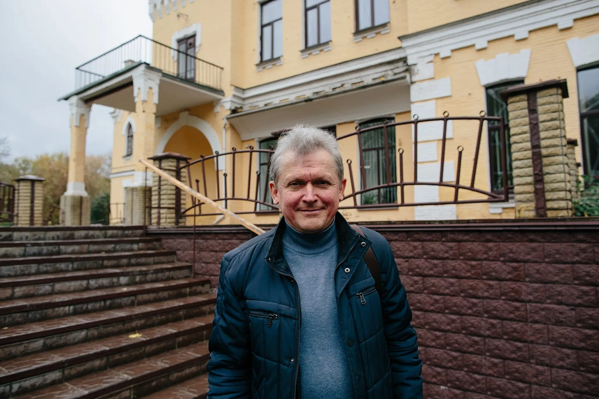
The director of the institution, Anatoliy Moskalenko, who has been working here for 15 years, meets us at the porch and recounts the legend. The estate with its former park belonged to the nobleman Grigory Glebov. Allegedly, he fell in love with a French woman in Paris and invited her to Chernihiv. She refused to come because he did not have a castle: how could he be a nobleman without one? Glebov returned and built a luxurious estate.
The Glebov family moved abroad in 1918. The building was nationalized in the USSR: sanatoriums operated here, and since 1961, the Institute has been working here. Thus, in the estate where the head of the district nobility in Chernihiv once lived, test tubes with bacteria settled. When Russian troops attempted to break into the city in 2022, and the blast wave and shrapnel from Russian shells left wounds in the walls of the building, the main goal of the staff was to preserve them at all costs.
The founder of the Institute is Mykhailo Revo. He was the first to study lymphocytic choriomeningitis in the former Soviet Union, successfully attempted to cultivate the foot-and-mouth disease virus in animal tissues using the explantation method, produced and tested the immunogenic properties of organisms recovering from foot-and-mouth disease, and made many other important discoveries.
He founded the Department of Agricultural Microbiology, Virology, and Immunology of the Ukrainian Research Institute of Agriculture in Chernihiv in 1960.
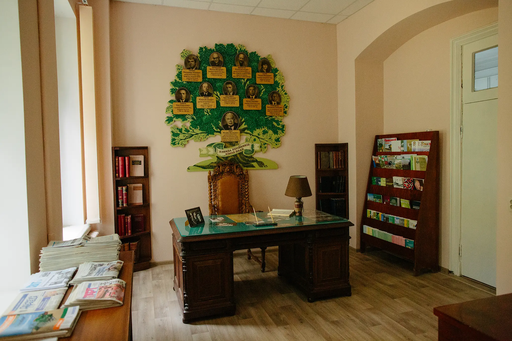
The scientist's desk and chair have been preserved: they were restored and placed in the Institute's library.
Today, the main directions of the institution's scientific activities are:
— Soil microbiology (research on the biological transformation of nitrogen and phosphorus compounds, plant-microbe interactions, physiology of soil microorganisms, development of microbial preparations for agriculture);
— Biological protection of plants and animals (issues of plant disease protection, diagnostics of plant and animal viral pathogens);
— Zootechnical microbiology (development of preparations, technologies for harvesting and storing feeds);
— Scientific support for agro-industrial production (creating new crop varieties and growing technologies).
— Research in the field of agricultural microbiology, development of new preparations, research on strain selection of beneficial microorganisms. They also develop the veterinary direction, including feed production.
Anatoliy Moskalenko shows the damaged roof (it leaks, although the staff tried to patch it themselves) and the alley that employees planted during the visit of the Latvian Minister of Economics.
"Ironically, we replaced all the windows in the laboratory complex before the [major] war, in 2021. Now almost all of them are damaged," the director says.
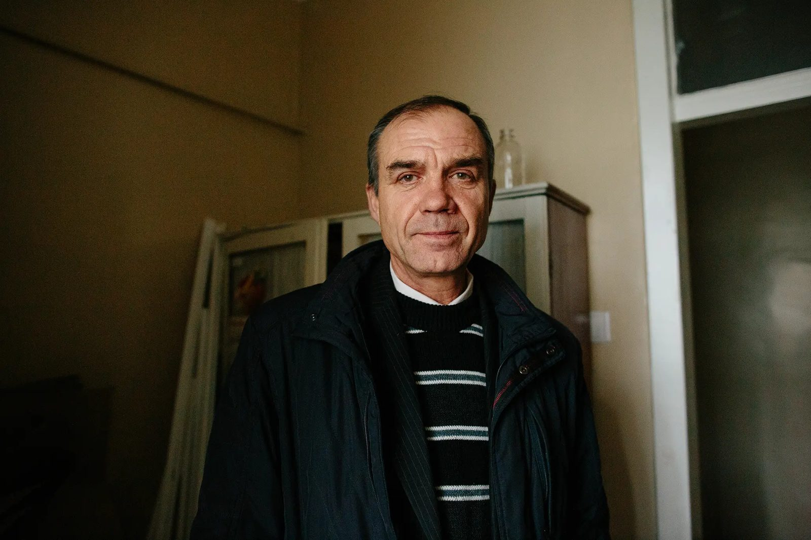
At the entrance to the administrative building, we are met by his deputy, Yuriy Khalep. He lived in the building and guarded it for the most challenging month and a half for the city in 2022, when fighting was taking place on the outskirts of Chernihiv.
There were two laboratories here (probiotics and physiology of microorganisms), as well as the pride of the institution — the Collection of Beneficial Soil Microorganisms, which has the status of a National Treasure. This is what Yuriy Mykolaivich guarded most closely. Losing the strains would mean losing the scientific contribution of previous generations of scientists, developed over decades.
"We removed the signs at the recommendation of law enforcement agencies to make the institution harder to identify," says Anatoliy Mykhailovych, opening the door crossed with tape.
"Good afternoon! May I have your surname, please?" the guard greets us. We sign the visitor's logbook. "The Institute is of strategic importance to the economy and security of the state, according to a government resolution — so there is a corresponding regime here," the director explains.
At the entrance is a sort of installation: photos of the damage that occurred in the Institute's four buildings due to shelling, and remnants of the shells collected on the premises.
"This is the laboratory building. The military positions were already a kilometer away from it. It's clear that the shelling was very intense; the car parked there was damaged," Anatoliy Mykolaivich points to the photos showing completely shattered windows, covered from the inside with pieces of cardboard, and the damaged frame of the vegetative house — what was left of the structure.
"Of course, compared to what happened in Kherson, Zaporizhzhia, Kharkiv, Dnipro, and other cities, this may seem like minor details, but at that time, it was a big shock," Yuriy Khalep adds.
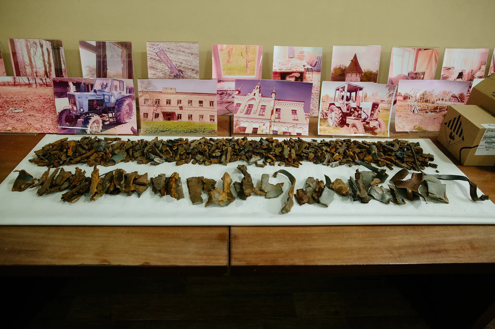
Near the stands are protective documents on the scientific discoveries of the Institute's employees that are successfully commercialized: patents, certificates, credentials for completed scientific developments, and biological products.
I ask them to tell me about one of their developments that the interlocutors consider the most significant. Anatoliy Moskalenko replies without hesitation that each one is important. "Because it is the result of long-term meticulous work that begins with the selection of microorganisms. Selection can take years: you have to find the microorganism that is the best in terms of its qualitative characteristics. I want to tell you that this is an art: you can work all your life and not select a single strain of microorganisms that you need. The people who have been working with us for decades have a professional intuition for this," he says.
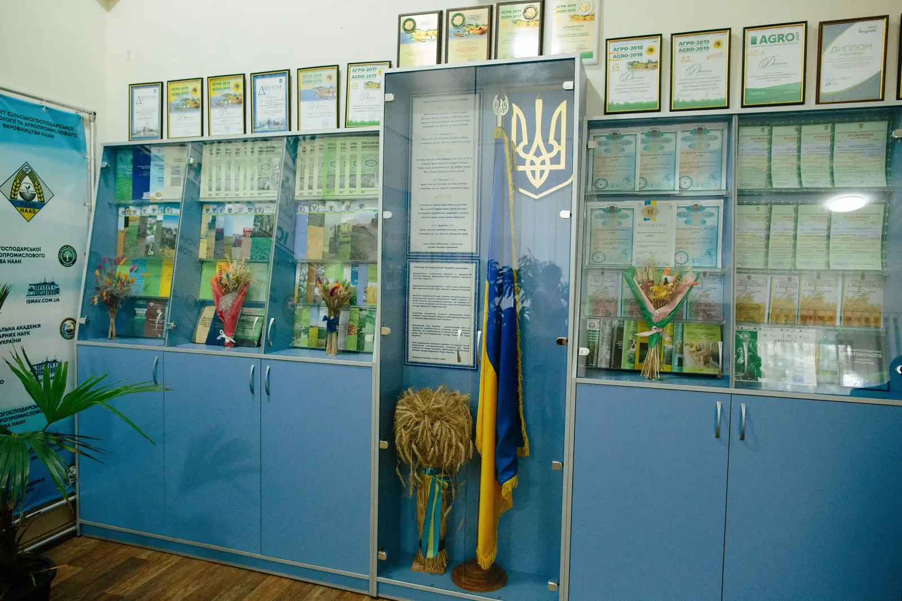
At the institute, they not only create biological products that increase the yield of agricultural crops but also commercialize them. However, after February 2024, revenues from the implementation of scientific developments have sharply decreased.
"No chemical agents are used in the production technologies of this product; instead, organic fertilizers, biological products, and green manure are used," the director of the institution explains the principle of action of the main part of the collective's developments. "When agricultural seed is treated with microbiological preparations, beneficial microorganisms colonize the root zone of plants, preventing pathogenic microorganisms from entering and supplying nutrients necessary for plant development."
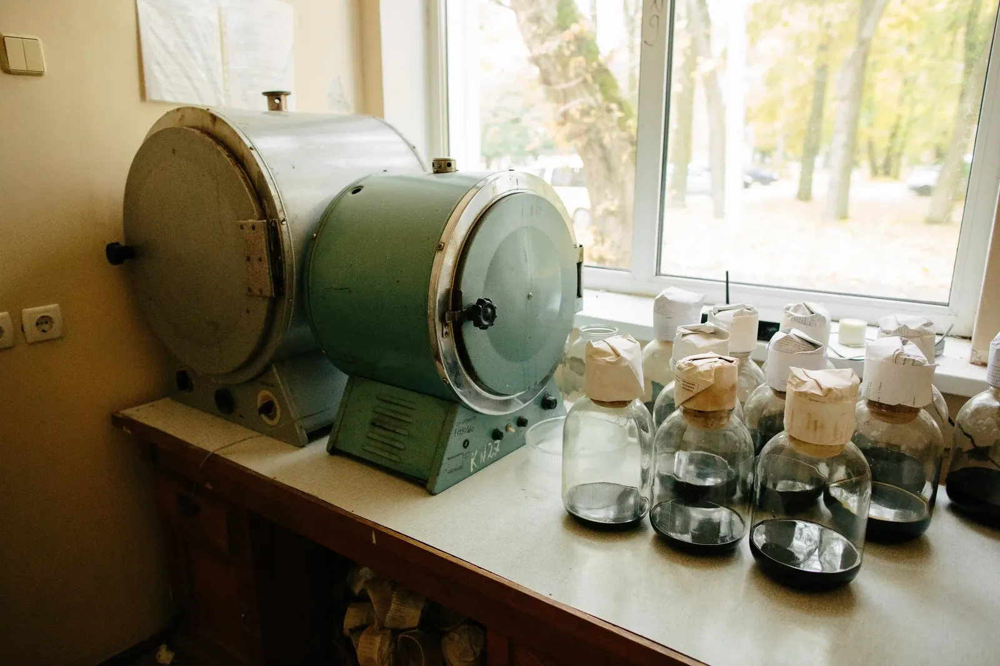
For example, one of the products created at the institute allowed a Kharkiv agricultural company to double its pea yield. Farmers in Latvia achieved the same result. The institute has a distributor that sells products in the northern EU countries.
"Unfortunately, this cooperation has been suspended since the beginning of the war. We explored different delivery options, but there are no flights now, and we cannot deliver the products through Belarus. Although there was already an order for 2022," adds the director of the institution.
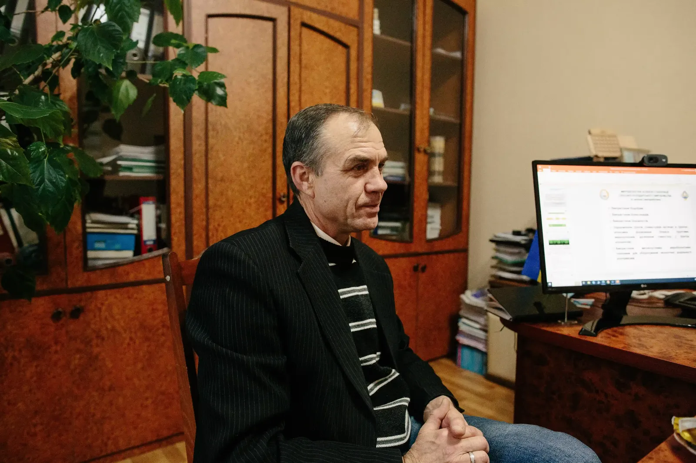
Before the full-scale war, the institute was not prepared: they did not believe that such a thing could happen in the 21st century. On February 24, 2022, the institute had scheduled a regional forum for organic producers. Anatoliy Mykhailovych recalls that everyone came to work that day, even finishing the preparation of a product intended for rodent control. There were no safety protocols at that time.
In mid-March, the institution began to be guarded by employees: Yuriy Mykolaivich literally moved into the main building with his wife, and two other employees moved into the laboratory building with their wives. They cleaned up everything they could from the desks so that shrapnel would not damage the equipment.
However, you cannot hide the collection of microorganisms. These are test tubes with bacteria stored in five refrigerators. It was developed over decades, so it would be very difficult, if not impossible, to restore the strains if they were lost. After all, out of thousands of microorganisms, only a few are found to be effective.
The collection began to form in 1969 by gathering soil microorganisms of scientific and practical value. Today, it is a separate sector that is part of the laboratory of microorganism physiology. Valuable are the typical strains used as standards for the corresponding species of microorganisms. The main task of the collection is the long-term guaranteed storage of stable cultures of microorganisms with their primary characteristics and the replenishment of the funds with new strains of bacteria and fungi.
The collection has a wide variety of strains, not only in terms of their properties but also geographically: there are groups of microorganisms collected in Ukraine, Kazakhstan, Lithuania, Latvia, Estonia, Germany, Brazil, and Pakistan.
In the laboratory, we are met by female employees. The head of the collection, Yulia Vorobei, is currently receiving an order from Kyiv. She has been working at the institution since 2001, starting as a graduate student. Later, she will tell us that she loves her job: the realization that a small microorganism can affect the yield of a large field gives her wings.
After hanging up, Yulia shows us test tubes and tells us about the properties of the contents.
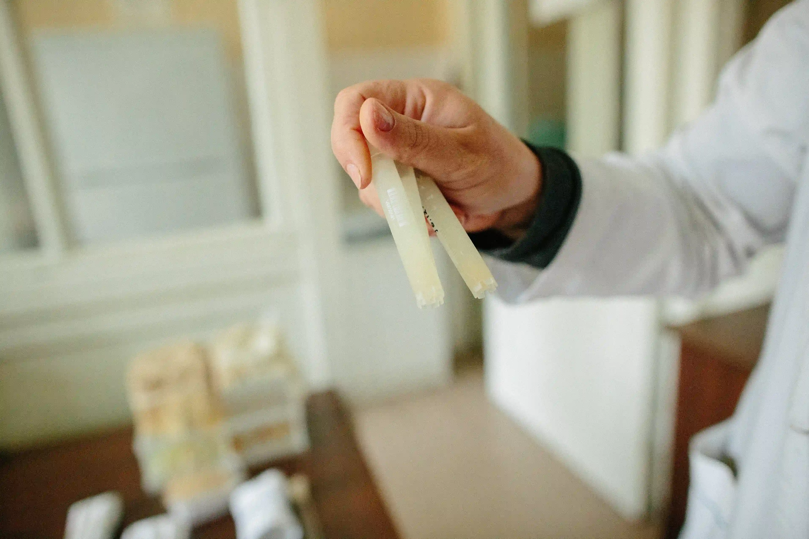
"The collection preserves a variety of microorganisms. These include rhizobia, bacteria that form symbionts with legumes, and associative bacteria. Now I'll show you," she takes a test tube in her hands. "These are azospirilla: you see, pink pigment forms wrinkles. They settle on the roots of plants, providing them with nitrogen by fixing molecular nitrogen from the atmosphere and directly supplying such safe fertilizer to the plant."
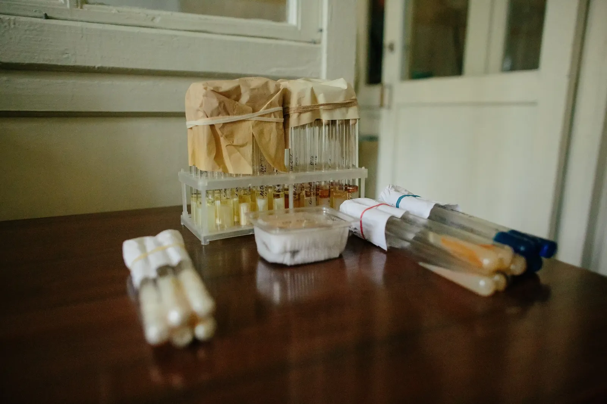
These bacteria are stored on agarized (semi-liquid) medium, which is similar to jelly. The bacteria in the test tube are covered with a light film: the medium has turned blue, while it is green when not inoculated.
Another storage method is in a lyophilized state (freeze-drying with moisture removal) in special ampoules. The drying of the microorganism occurs under pressure, and they can be stored in this form for 30 years.
For a moment, the woman takes out another "exhibit" from the refrigerator: some strains are stored frozen, using special substances for better preservation — cryoprotectants. They are necessary to preserve the viability of bacteria.
Preserving the collection is not just keeping test tubes in the refrigerator. Certain strains often lose their properties: they need to be revived, reseeded, and rejuvenated—this process in the laboratory is ongoing.
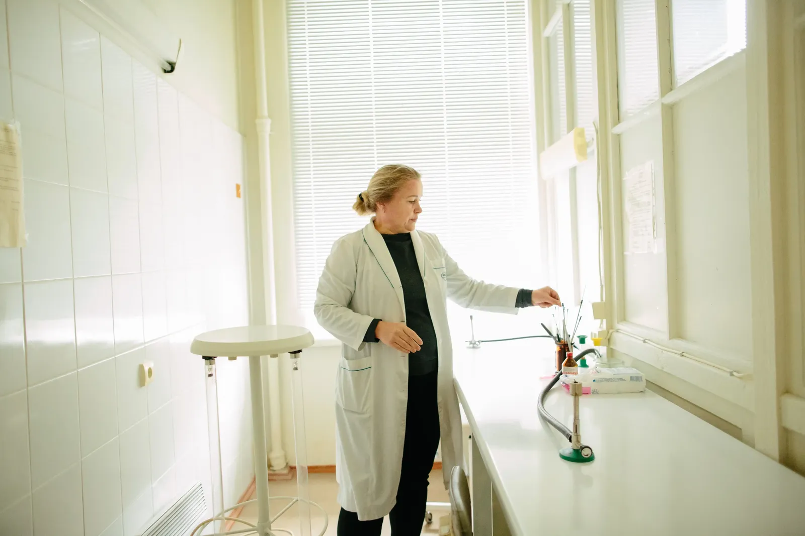
Some bacteria are reseeded monthly or every six months. There is a group of bacteria that are very demanding in terms of nutrients, so they must be reseeded every 10-14 days. On agarized media, such bacteria are stored for 3-4 months.
Certain groups of microorganisms can be stored for up to 10 years. These bacteria are first grown on agarized media, and then covered with a layer of sterile medical vaseline oil — this provides optimal conditions for preserving the microorganism's viability.
"Some bacteria can only endure this storage method for one year, while others can be stored for 10-15 years," Yulia explains.
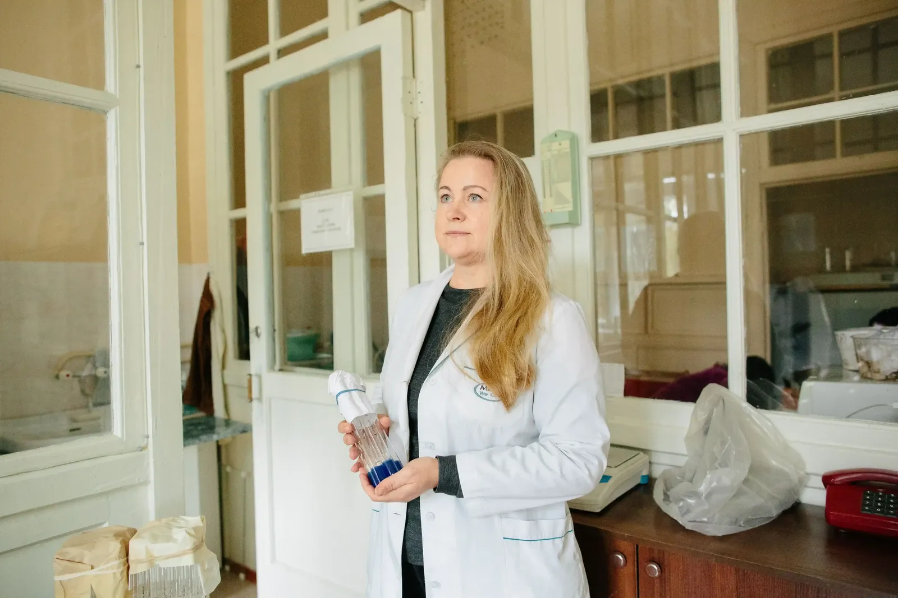
Reseeding occurs in sterile boxes. We peek inside a narrow, bright room with nothing superfluous: only the necessary equipment for work. Coats, worn exclusively here, hang near the boxes: there should be no extra bacteria in the room.
Workers take material from one test tube and reseed it into another in close proximity to the flame, which protects against foreign microorganisms.
"Of course, you have to work here very carefully because all loops are heated, everything is treated with alcohol: hands and surfaces — everything is sterilized," Yulia comments.
Among the microorganisms from the collection are many strains with agronomic value, which serve as the basis for producing bacterial preparations that increase the yield of various agricultural crops.
It is necessary to check that this property remains constant, so special attention is paid to these bacteria: different methods are used to check how they are doing after storage. For this purpose, experiments are laid out in the field: the seeds are treated with bacterial suspensions of these microorganisms. Then it is checked according to yield indicators, crop structure, plant height, and so on — determining how effectively the microorganisms increase plant productivity.
There is a working collection with newly isolated isolates. "We isolate them from various crops, check how positively they affect the plant, and select the best ones to keep in the collection," Yulia Vorobei explains.
Each strain has its own passport. "Graduate students like the fact that they can isolate a new strain that does not yet exist, give it a name, although they are usually named with letters and numbers for easy work," explains the collection manager.
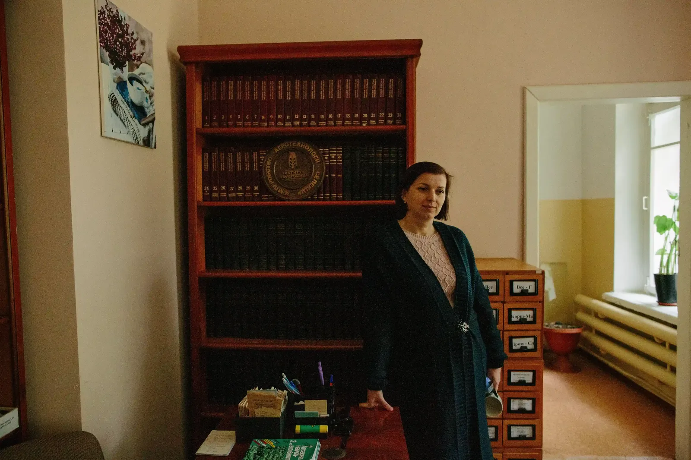
I ask how they took care of the strains during the military actions in Chernihiv. "It was very difficult because the refrigerators were not working. There was no electricity anywhere," lead microbiologist Tetiana Usmanova joins the conversation. "Yuriy Mykolaivich carried the collection around, protected it, dried it, took it out of the refrigerators, checked which room had the best temperature, and took it there. It was a whole saga."
Some strains were saved by the fact that March was cold, and the windows in the buildings were broken, so the bacteria were preserved without refrigerators. Some of them died, especially those that required regular reseeding. So, Yulia and her colleagues immediately began to restore them from the remnants after Chernihiv was liberated: they saved the strains stored under petroleum jelly and frozen.
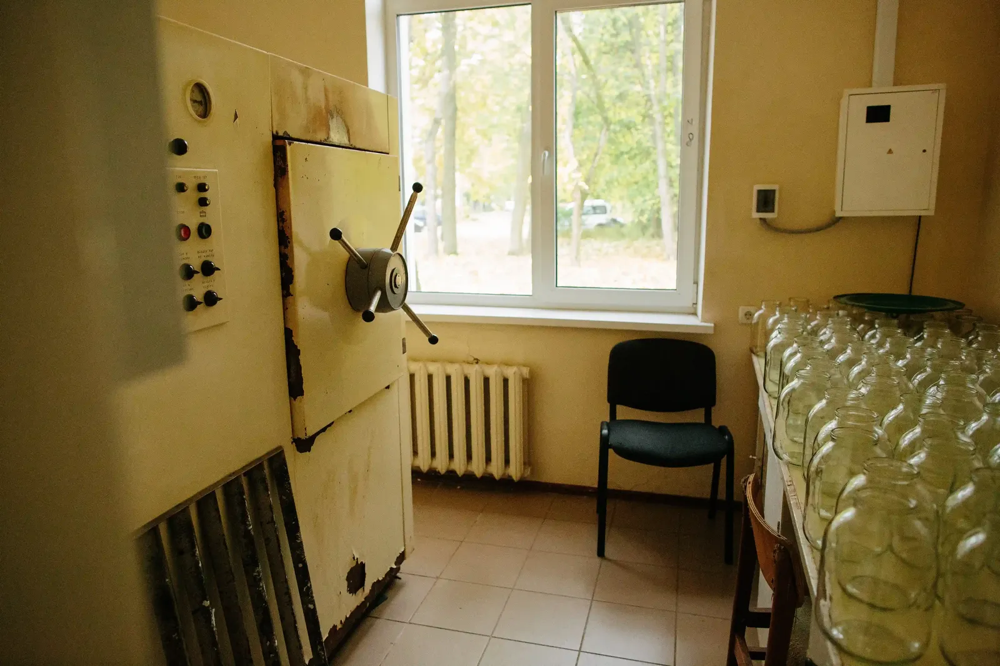
"All this takes extra time; some of them grew very poorly. It was a very difficult period, but we managed to do it, as you can see," she says.
In April 2022, when transportation in the city was not yet running, she and her colleagues walked to work. Some of them took an hour and a half one way. Together, they cleaned the buildings, swept up the debris — made the premises suitable for work. The most damaged was the neighboring building, which the workers call the yellow one. It is one of the places where preparations are made.
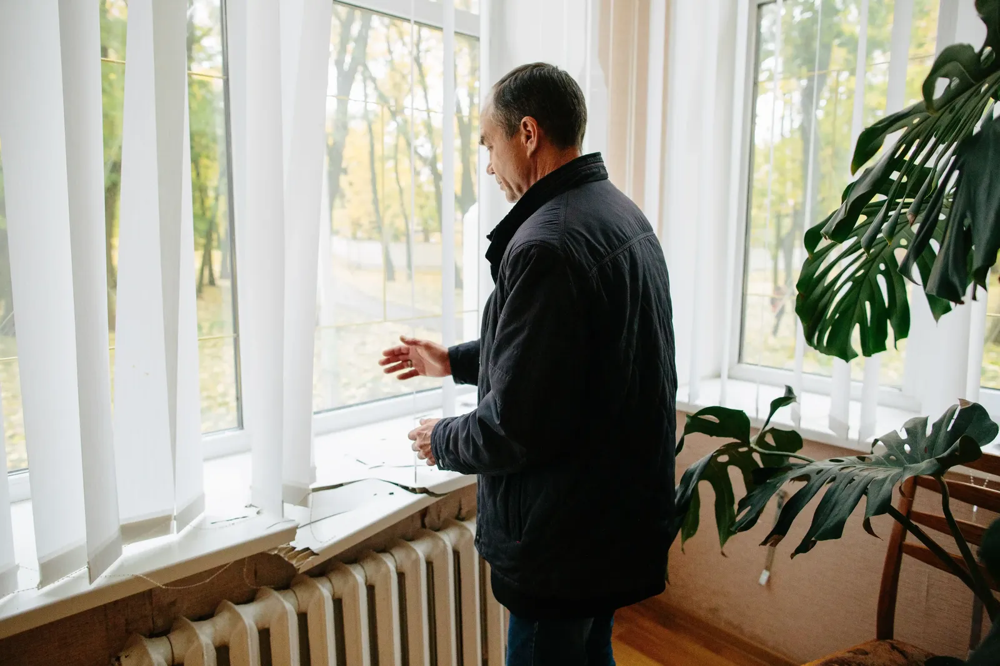
Yuriy Mykolaivich shows us the windows he patched himself. There are holes from shrapnel in the walls of several rooms. Windowsills and a microwave are pitted with shrapnel. In one of the rooms, the ceiling collapsed: it damaged the building's roof, and due to the blast wave, it fell. The man warns that it is dangerous to be here.
It requires significant funds, which, unfortunately, cannot be obtained anywhere. "There are many different programs, grants now, and we tried to apply for them, but they mostly concern private houses or businesses, not scientific institutions," Yuriy Khalep says.
Some rooms in the building are arranged and used for research: jars with liquids line up on the tables. In one of the rooms, the man shows us "swings for jars" — to ensure better aggregation in the air and better bacterial growth. However, the temperature regime is not suitable for this now, so the "swings" are empty.
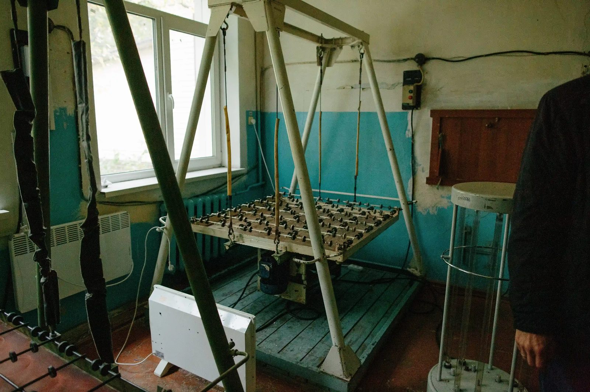
"We have funding from two sources," Yuriy Khalep explains as we explore the area. "The first is the general fund. These are budget funds, as we are a state institution. This source has been severely reduced. The second is our earnings from the implementation of preparations. Last year we earned 12 million; now the amount has fallen to four."
The employee explains that most of the earnings come in spring when agricultural crops are sown, as the preparations and bacteria developed by the Institute are mainly intended for seed treatment. Spring 2022 was lost because the institute did not function until May when its employees started returning to work. There was no water, electricity, or communication — this significantly complicated work. Only in June did they resume production of preparations for animal husbandry.
And for consumers, the war imposed financial problems: there is no realization of products. "Without seeds, diesel, or fertilizers, you can't sow anything. Without preparations, the opposite is true. The yield will be smaller, but there will be one. All this affected the volume of implementation and our earnings," adds Yuriy Mykolaivich.
Currently, 46 windows need repair. The most significant problem for workers is equipment. The gas chromatograph has broken down. It was on the table when the windows were blown out by the blast wave. The device allowed research related to plant and soil samples on certain components, conducting a narrow analysis of micro- and macro-elements, acids in plants.
"The absence of a gas chromatograph will not allow us to complete all planned research. There is no such device in Chernihiv; it is costly equipment. A new one costs about two million hryvnias," Anatoliy Moskalenko says.
Damage also affected refrigerators, thermostats, and a digital microscope. However, the Institute says this is a lesser problem since they have at least one or several such devices, while the gas chromatograph in the institution was one, and this modification is no longer produced.
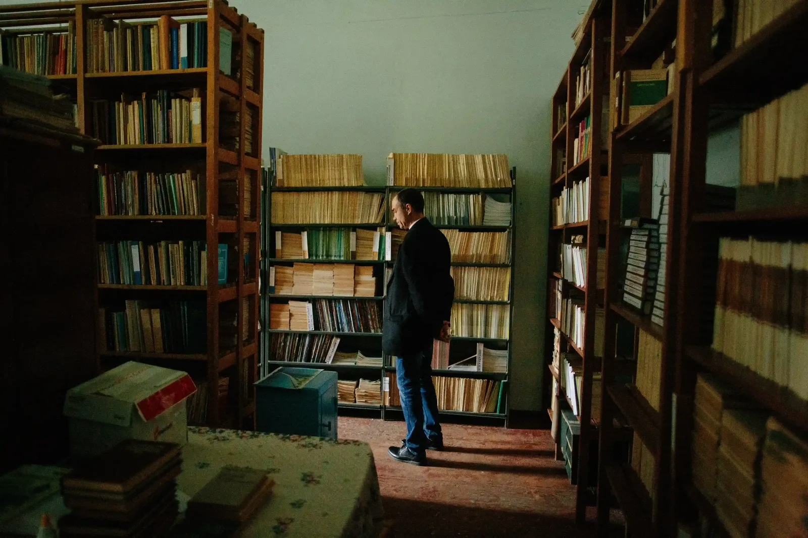
There is also a problem with personnel at the institution: due to reduced funding, people have to work at 0.5 or 0.7 rates. Currently, only one employee works full-time, who lost her home. Because of this, the youth is leaving the institution. "Commercial structures are very interested in microbiologists because everyone in agribusiness understands the importance of this field. Only those who are fanatically dedicated to their specialty remain. It's a shame that the youth are leaving. It takes about 15 years to train a professional microbiologist," says Anatoliy Mykhailovych.
Currently, the Institute employs about 90 people. They continue to carry out the scientific research program "Agricultural Microbiology," working on 16 scientific tasks within it and two others under different scientific programs of the National Academy of Agrarian Sciences.
With the support of the Alfred P. Sloan Foundation and the assistance of IIE.